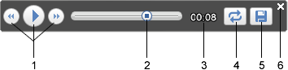
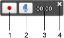

You can create and play tours of places and content. Tours are a guided experience where you fly from one location to another, view terrain and content and look around as you wish. You can create tours that record your exact navigation in the 3D window and even add audio. You can then share these tours with other Google Earth users.
To play a tour, double click the tour in the Places panel. To create and play a new tour of items in My Places, select the appropriate folder in the Places panel and click the Play Tour button . To create and play a new tour of a line (path), select the appropriate line in the Places panel and click the Play Tour button .
The tour begins playing in the 3D viewer and the tour controls appear in the bottom left corner of the 3D viewer. To pause or resume the tour, click the Pause/Play button. To fast forward or go back on the tour, click the arrow buttons (press these repeatedly to accelerate back or forward). To replay the again and again tour, click the Repeat button. Use the tour slider to move to any part of the tour.
These controls disappear if the tour is inactive for a period of time, but you can make
them reappear by moving the cursor over the bottom left corner of the 3D window.

As a tour plays, you can look around by dragging the view. Note that this is diferent than navigating, as you can only look around from the view points of the tour. When you pause a tour, you can navigate anywhere. When you click the play button again, the tour resumes where it left off. Once you create a new tour, be sure to click the Save tour button.
To record a tour, click the Record a Tour button in the toolbar or click View > Tour. The record tour controls appear in the bottom left corner of the 3D window. To begin and end recording, click the Record/Stop button. To add audio to your tour, click the Audio button. When you are finished recording your tour, it appears in the Places panel. You can then play it or share it with others.

When you finish recording, click the Record/Stop button. The tour then plays. To save the tour, click the Save button in the playback controls that re-appear. Your tour appears in the Places panel.
Tours are KML-based. If you are familiar with KML, you can manually edit the code of your tour. Learn more about KML.
Tip - You can record while another tour is playing to record a new tour. This allows you to create interesting perspectives and effects in the new tour, such as using the mouse to change the viewing angle.
You can control touring behavior, as described below. To access these settings, click Tools > Options. (on the Mac, click Google Earth > Preferences).
When you are creating a tour from a folder in the places panel, use these settings:
When you are creating a tour that follows a line (path), use these settings:
When you are recording a tour, use the slider to choose a balance between the file size and the quality (fidelity) of your tour.

�2009 Google - Privacy Policy - Terms and Conditions - About Google
Updated on